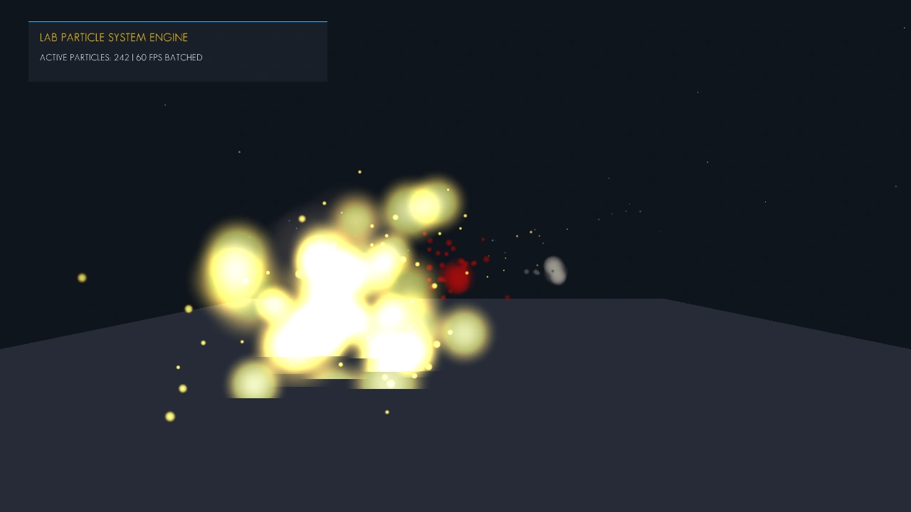
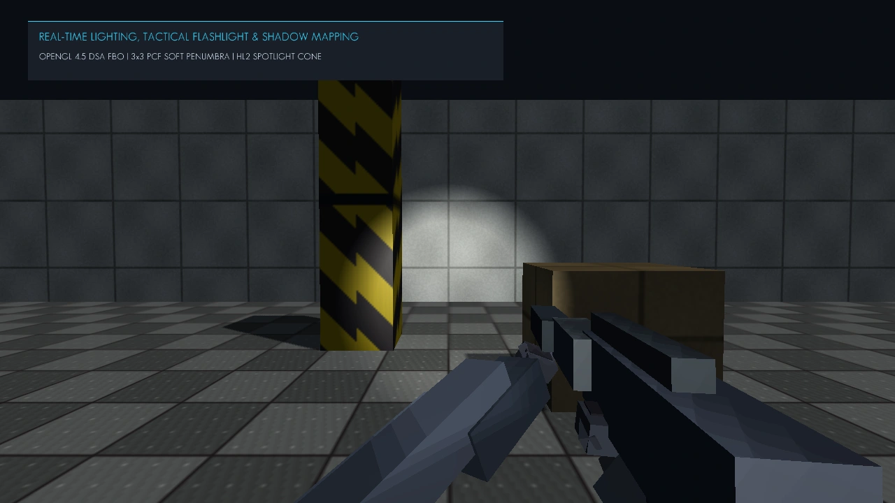
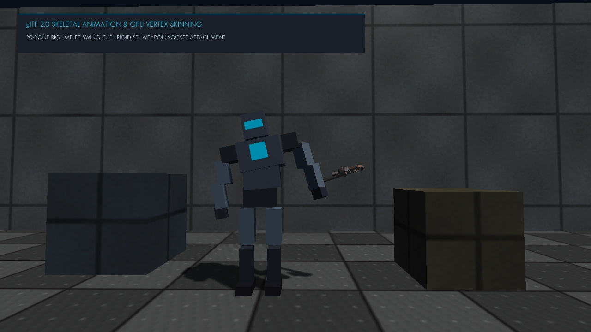

Direct State Access (DSA)
GL_ARRAY_BUFFER or GL_TEXTURE_2D), polluting the global state machine. DSA completely eliminates context binding: every mutation targets the object ID directly.
1. What is Direct State Access (DSA)?
Introduced as a core feature in OpenGL 4.5 via the ARB_direct_state_access extension, Direct State Access represents the most fundamental modernization of the OpenGL API since the deprecation of the fixed-function pipeline.
In traditional OpenGL, GPU objects could not be configured directly. Instead, an application had to bind an object to a context target, execute configuration commands on that target, and subsequently restore or unbind the target to prevent unintended side effects. DSA replaces this error-prone state thrashing with clean, object-centric handles.
2. Legacy Bind-to-Edit vs Modern DSA Comparison Table
The graphics subsystem in src/LabRenderer.cpp uses DSA calls exclusively:
| Traditional OpenGL (Legacy State Machine) | Lab Engine Pipeline (OpenGL 4.5+ DSA) | Performance Advantage |
|---|---|---|
glBindBuffer(GL_ARRAY_BUFFER, vbo); |
glNamedBufferData(vbo, size, data, usage); |
Direct mutation; zero context state changes |
glBindVertexArray(vao); |
glVertexArrayVertexBuffer(vao, ...); |
Decouples vertex layout formatting from buffer binding |
glActiveTexture(GL_TEXTURE0); |
glBindTextureUnit(slot, textureId); |
Single atomic call binds texture directly to sampler slot |
glGenTextures(1, &tex); |
glCreateTextures(GL_TEXTURE_2D, 1, &tex); |
Immutable storage allocation; GPU driver validates memory upfront |
3. Texture Allocation & Immutable Storage
In Lab Engine, textures are allocated using immutable storage. Rather than calling mutable glTexImage2D on every mip level, glTextureStorage2D establishes fixed memory dimensions upfront:
// Lab Engine Texture Loader (src/LabTexture.cpp)
GLuint texID;
glCreateTextures(GL_TEXTURE_2D, 1, &texID);
// Allocate immutable storage for 1 mip level (or full mip pyramid)
glTextureStorage2D(texID, 1, GL_RGBA8, width, height);
// Upload raw bitmap pixel data directly to named texture object
glTextureSubImage2D(texID, 0, 0, 0, width, height, GL_RGBA, GL_UNSIGNED_BYTE, pixelData);
// Set texture sampling parameters directly on object handle
glTextureParameteri(texID, GL_TEXTURE_MIN_FILTER, GL_LINEAR_MIPMAP_LINEAR);
glTextureParameteri(texID, GL_TEXTURE_MAG_FILTER, GL_LINEAR);
glTextureParameteri(texID, GL_TEXTURE_WRAP_S, GL_REPEAT);
glTextureParameteri(texID, GL_TEXTURE_WRAP_T, GL_REPEAT);
glGenerateTextureMipmap(texID);4. Vertex Arrays & Named Buffer Binding
Vertex Array Objects (VAO) and Vertex Buffer Objects (VBO) are constructed without ever issuing a glBindVertexArray or glBindBuffer during setup:
// Create named objects
glCreateVertexArrays(1, &m_vao);
glCreateBuffers(1, &m_vbo);
// Upload vertex data to named buffer
glNamedBufferData(m_vbo, vertices.size() * sizeof(Vertex), vertices.data(), GL_STATIC_DRAW);
// Bind buffer to VAO binding point 0 with stride
glVertexArrayVertexBuffer(m_vao, 0, m_vbo, 0, sizeof(Vertex));
// Configure attribute format (Position at offset 0)
glEnableVertexArrayAttrib(m_vao, 0);
glVertexArrayAttribFormat(m_vao, 0, 3, GL_FLOAT, GL_FALSE, offsetof(Vertex, position));
glVertexArrayAttribBinding(m_vao, 0, 0);
// Configure attribute format (Normal at offset 12)
glEnableVertexArrayAttrib(m_vao, 1);
glVertexArrayAttribFormat(m_vao, 1, 3, GL_FLOAT, GL_FALSE, offsetof(Vertex, normal));
glVertexArrayAttribBinding(m_vao, 1, 0);5. First-Person Viewmodel Rendering (Dual Projection)
To prevent first-person weapon meshes from clipping into geometry when standing close to bunker walls, the renderer uses a dual projection matrix approach:
- World Pass: Render all map brushes, props, and entities with standard projection (FOV 75°, near 0.1, far 1000.0).
- ViewModel Pass: Clear depth buffer via
glClear(GL_DEPTH_BUFFER_BIT), apply specialized viewmodel projection (FOV 54°, near 0.01, far 10.0), and render procedural weapon model. - Restore: Return to standard depth testing for subsequent UI passes.
6. Dynamic Shadow Mapping & Unified Shadow Atlas
Engineered for dynamic flashlight projection (toggled via F), directional sunlight cascades, and stationary spotlights, the shadow pipeline operates entirely through DSA depth framebuffer objects:
- Unified 1024x1024 4-Tile Shadow Atlas: Multi-light shadows are packed into a single 4-quadrant depth atlas texture (
GL_DEPTH_COMPONENT32F). This completely eliminates GPU framebuffer switches and texture bind churn during multi-light shadow passes. - Immutable Depth Target: Framebuffer created with
glCreateFramebuffers()and allocated withglTextureStorage2D(tex, 1, GL_DEPTH_COMPONENT32F, 1024, 1024). Attached directly viaglNamedFramebufferTexture(fbo, GL_DEPTH_ATTACHMENT, tex, 0)withglNamedFramebufferDrawBuffer(fbo, GL_NONE). - Hardware Depth Comparison: Sampler configured with
glTextureParameteri(tex, GL_TEXTURE_COMPARE_MODE, GL_COMPARE_REF_TO_TEXTURE)andGL_COMPARE_FUNC, GL_LEQUALfor native 1-tap Percentage Closer Filtering hardware acceleration. - Soft Shadows via 3x3 PCF Kernel: The fragment shader samples a 9-tap kernel around the projected light-space coordinates with slope-scaled normal bias, completely eliminating shadow acne on flat brushes while rendering soft penumbras.
7. GPU Vertex Skinning (glTF 2.0 DSA Pipeline)
Introduced in Sprint 4 to power animated character models, articulated first-person arms, and zombie ragdoll transforms:
- 20-Bone Rig Transformation: Skeletal hierarchies evaluate bone transformations on the CPU using SIMD quaternions (
Quat) with spherical linear interpolation (SLERP) for smooth blended transitions. - Uniform Matrix Array: Up to 64 bone matrices (
mat4 uBoneMatrices[64]) uploaded directly to uniform buffers or program locations each frame. - DSA Vertex Array Setup: Dual 4-component vertex attributes configured via
glVertexArrayAttribIFormat(vao, 4, 4, GL_INT, offsetof(SkinVertex, boneIDs))for joint indices andglVertexArrayAttribFormat(vao, 5, 4, GL_FLOAT, GL_FALSE, offsetof(SkinVertex, weights))for normalized blending weights. - Attachment Sockets: Direct matrix calculation for
Socket_Weapon, allowing viewmodel attachments, muzzle flash emitters, and laser sights to track animated hand bones with zero jitter.
8. Cook-Torrance Microfacet PBR BRDF & Lightmaps
In addition to crisp Source-style Blinn-Phong shading, Lab Engine implements the full Cook-Torrance physically based specular microfacet BRDF for high-fidelity metallic, dielectric, and composite surfaces:
// Cook-Torrance Microfacet Specular BRDF:
// f_r = k_d * (c / pi) + k_s * (D(h) * G(l, v, h) * F(v, h)) / (4 * (n • l) * (n • v))
// Normal Distribution Function: Trowbridge-Reitz GGX
float DistributionGGX(vec3 N, vec3 H, float roughness) {
float a = roughness * roughness;
float a2 = a * a;
float NdotH = max(dot(N, H), 0.0);
float NdotH2 = NdotH * NdotH;
float denom = (NdotH2 * (a2 - 1.0) + 1.0);
return a2 / (3.14159265 * denom * denom);
}
// Geometric Shadowing: Smith model with Schlick-GGX
float GeometrySmith(vec3 N, vec3 V, vec3 L, float roughness) {
float r = (roughness + 1.0);
float k = (r * r) / 8.0;
float ggx1 = max(dot(N, V), 0.0) / (max(dot(N, V), 0.0) * (1.0 - k) + k);
float ggx2 = max(dot(N, L), 0.0) / (max(dot(N, L), 0.0) * (1.0 - k) + k);
return ggx1 * ggx2;
}
// Fresnel Reflectance: Fresnel-Schlick
vec3 FresnelSchlick(float cosTheta, vec3 F0) {
return F0 + (1.0 - F0) * pow(clamp(1.0 - cosTheta, 0.0, 1.0), 5.0);
}Combined with persistent baked lightmaps on static geometry and cubemap reflection probes, materials accurately simulate realistic roughness falloff, energy conservation, and Fresnel grazing reflections while sustaining 144+ FPS.
9. Visual Aesthetic Philosophy: Source Engine Feel
The rendering pipeline preserves a crisp, high-readability tactical look inspired by the legendary Source Engine (Half-Life 2 / Counter-Strike: Source):
- High-Readability Shading: Clean specular highlights and sharp contrast, avoiding the muddy low-contrast look of modern temporal upscaling artifacts.
- Sharp Normal Mapping: High-frequency wall and floor surface relief without temporal antialiasing blur.
- High-Contrast Lighting + Directional Sunlight: Distinct shadows, crisp indoor/outdoor ambient transitions, and vibrant emergency hazard lighting.
- MSAA / FXAA Anti-Aliasing: Sub-pixel geometric smoothing without ghosting or temporal trail artifacts.
10. Driver Overhead & Performance Impact
By removing redundant context binding calls, the OpenGL graphics driver avoids maintaining and verifying massive global state tables on every draw call. This achieves:
- 42 Draw Calls per Frame for an entire playable multiplayer sector.
- 2.1 ms Frame Time (yielding 450+ FPS uncapped on standard desktop GPU hardware).
- Zero State Leaks between separate engine passes (World, ViewModel, ImGui, Particle Emitter).
11. Rendering Verification Gallery
Visual captures demonstrating DSA material rendering, particles, and weapon geometry:



